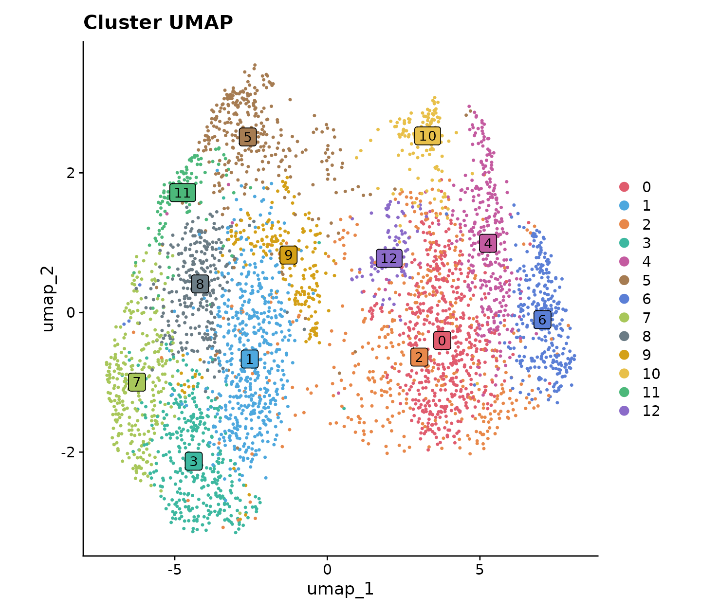
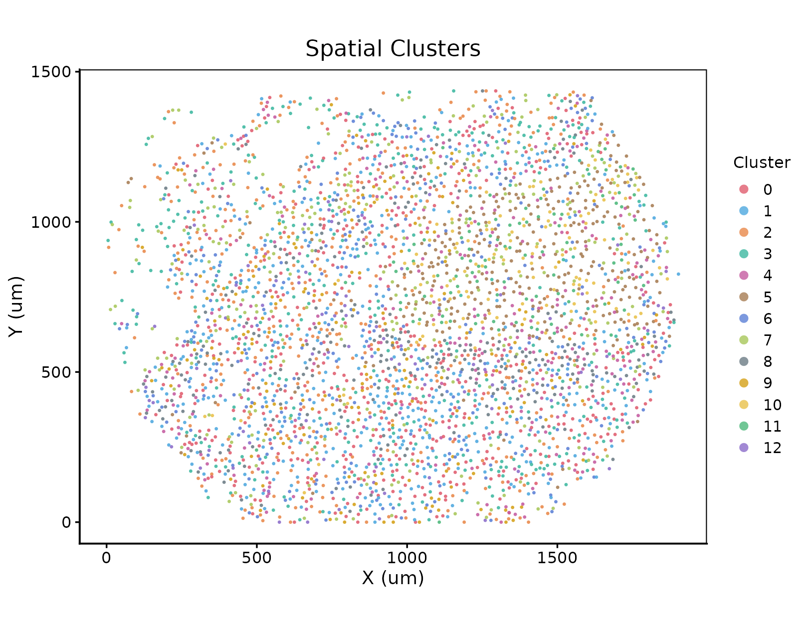

Overview
This module prepares spatial proteomics inputs (CODEX / CyCIF / MIBI tables or Seurat objects): QC filtering, normalization, dimensionality reduction, and clustering.
Examples use reg055_A (CODEX CRC, Schurch et al. 2020).
Load spatial data
obj <- load_spatial_data(filename = "reg055_A_counts_with_coords.csv")
# Or construct a Seurat object from an expression matrix plus X / Y metadata.QC filtering
obj_filtered <- filter_data(obj, nFeature_quantile_threshold = 0.05)Normalize, PCA, cluster
obj_processed <- process_data(obj_filtered, dims = 1:15, resolution = 0.5)
Extract spatial coordinates
obj_processed <- extract_spatial_coordinates(obj_processed)Quick cluster views
plots <- visualize_results(obj_processed, save_dir = "preprocess_plots/")
# plots$umap_plot, plots$spatial_plot

visualize_results() writes a cluster UMAP and a spatial map of cluster IDs using the package color palette.
Save
saveRDS(obj_processed, "reg055_A_processed.rds")Next step
vignette("annotation", package = "Sphinx"), or jump to spatial networks if labels are ready: vignette("spatial-network", package = "Sphinx").